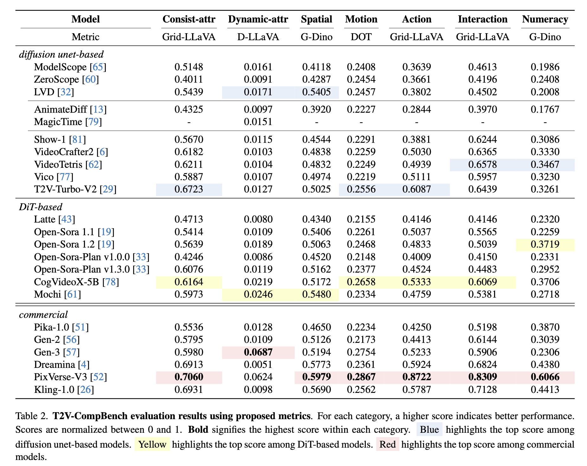

T2V-CompBench: A Comprehensive Benchmark for Compositional Text-to-video Generation
T2V-CompBench Prompt Suite.
Overview:
Introduction
Evaluation Metrics
MLLM-based evaluation metrics for consistent and dynamic attribute binding, action binding and object interactions.
Detection-based evaluation metrics for spatial relationships and object interactions.
Tracking-based evaluation metrics for motion binding.
Evaluation Results
Benchmarking open-sourced T2V Models with a radar chart.

T2V-CompBench evaluation results for 23 T2V generation models (17 open-source models and 6 commercial models).
Bibtex